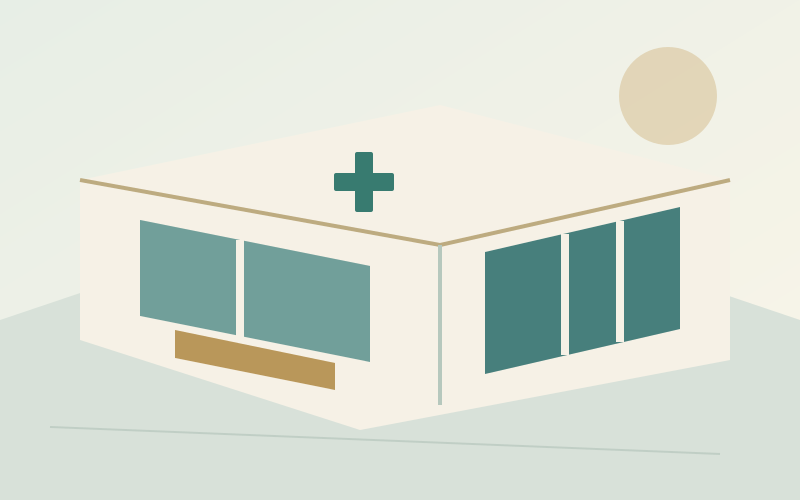
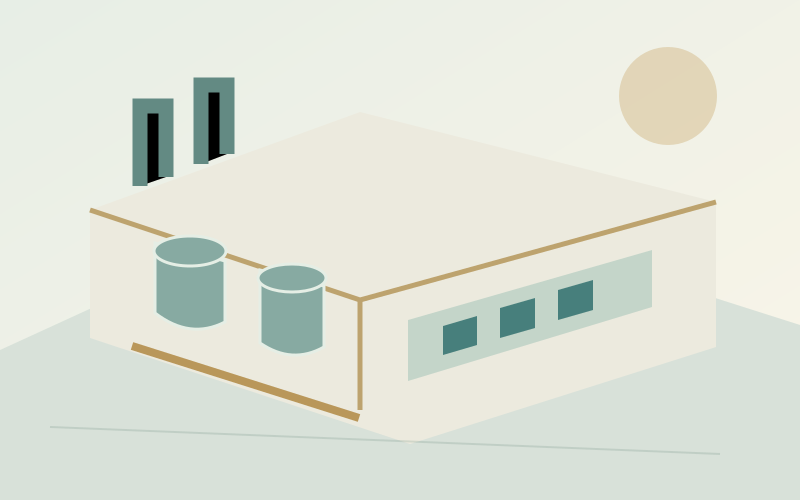
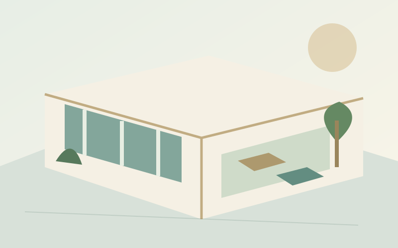

PELAYANAN FISIK
Queen Health & Lab
Kenali bisnis fasilitas kesehatan dan laboratorium AVA.
Jelajahi unit bisnis →AVA HEALTH SOLUTION / AVA GLOBAL ECOSYSTEM
AVA membangun ekosistem kesehatan dari hulu ke hilir: pelayanan, diagnostik, teknologi, nutrisi, dan wellness. Kualitas pengelolaan serta perhatian pada pengalaman pengguna menjadi dasar setiap langkah pengembangan.

PELAYANAN FISIK
Kenali bisnis fasilitas kesehatan dan laboratorium AVA.
Jelajahi unit bisnis →TEKNOLOGI
HIS, LIS, dan Apps tersedia untuk demo dan pembahasan uji coba terbatas.
Lihat solusi sistem →KEPEDULIAN & WELLNESS
Pengembangan perawatan diri, program dan pengalaman wellness untuk semua kalangan.
Kenali Care & Wellness →SATU EKOSISTEM / BANYAK RUANG KEHIDUPAN
Fasilitas kesehatan dan laboratorium menjadi fondasi layanan serta konteks pengembangan sistem.
Kenali arah bisnis →
Produk yang relevan, ketertelusuran mutu, dan aspirasi produksi sendiri dibangun secara bertahap.
Kenali arah bisnis →
Program, pendampingan, dan tempat bertemu untuk mendukung pengalaman yang berkesinambungan.
Kenali arah bisnis →DIBANGUN DARI PEKERJAAN NYATA
AVA Tech mengelola teknologi yang lahir dari kebutuhan operasional AVA, sekaligus membuka peluang penggunaan sistem bagi fasilitas mitra.
HIS, LIS dan Apps tersedia untuk demo. Sistem pengelolaan produksi, program wellness, dan operasional Sanctuary menjadi bagian dari rancangan pengembangan ekosistem. Lingkup tiap kemampuan ditinjau bersama sebelum implementasi.
MULAI PERCAKAPAN